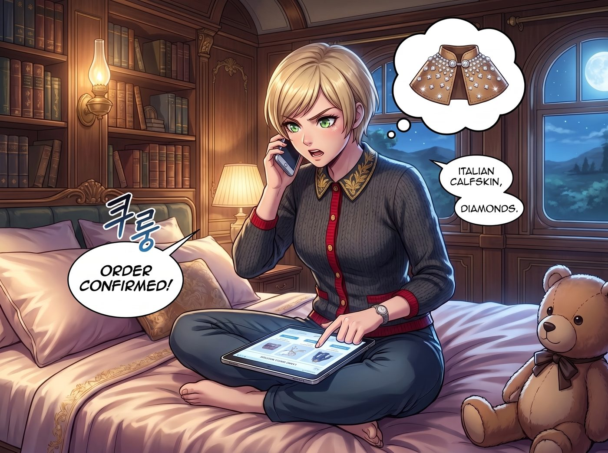

貴族的縫紉機事故

Victoria 是在偶然間，撞見 Chloe 和 Max 鬼鬼祟祟地在暗房裡討論什麼「供應鏈認證」的。
她原本只是想找 Max 借用暗房沖印幾張商業合約的存證照片，卻無意間聽到了「聖誕禮物」和「別讓 Lily 發現」這幾個關鍵字。名媛立刻警覺了起來，她的虛榮心比任何雷達都要靈敏——如果連 Chloe 和 Max 都準備了禮物，而她這個財力最雄厚、地位最尊貴的 Chase 財團繼承人，最後卻空手而歸，那簡直是奇恥大辱。
一、砸錢比拼的虛榮心
「哼，一群窮酸鬼，能買到的東西能有多大誠意？」Victoria 當晚就窩在自己房間裡，打開了線上精品店的目錄，手指飛快地滑動著，眼神裡閃爍著資本家特有的競爭光芒。
她的計畫很簡單粗暴：直接聯繫某個歐洲高級訂製工坊，訂做一件鑲著小顆鑽石、用義大利頂級小牛皮製成的迷你披肩，尺寸剛好可以讓 Lily 那隻新收到的絨毛小熊穿上。價格高達四位數美金，足以讓 Chloe 和 Max 那份手工挑選的禮物瞬間淪為地攤貨。
就在她準備按下「確認訂購」的按鈕時，房門被輕輕敲響了。
「Victoria，妳在忙嗎？」Kate 端著一杯洋甘菊茶，溫柔地探進頭來。
二、溫柔的攔截
Victoria 心虛地想把螢幕蓋上，但已經來不及了。Kate 的視線精準地落在那件標價驚人的訂製披肩上，又看了看 Victoria 那副做賊心虛的表情，瞬間就明白了大半。
「Victoria，妳也想送 Lily 禮物呀？」Kate 在床邊坐下，語氣裡沒有一絲責備，只有一貫的溫柔，「這件披肩看起來好精緻呢。不過……妳有沒有想過，Lily 收過那麼多昂貴的東西，妳這份禮物要怎麼讓她記得，是『妳』送的，而不是隨便哪個供應商能提供的服務呢？」
Victoria 的手指停在滑鼠上，愣住了。
「Chloe 和 Max 差點誤買了問題商品，後來連夜換貨、甚至幫她篩選出完全合乎她心意的供應鏈認證，這整個過程裡，她們花的不是錢，是心思。」Kate 輕輕拍了拍 Victoria 的手背，「如果妳想讓 Lily 感受到獨一無二的重視，或許親手做點什麼，會比任何鑽石披肩都更有份量哦。」
名媛沉默了幾秒，高傲的自尊心在「合理邏輯」與「不服輸」之間反覆拉扯，最終還是硬著頭皮點了點頭：「……好吧。但妳得教我，我這輩子除了簽名，從沒拿過針線。」
三、災難級的裁縫機
兩人的計畫是，合力為 Lily 那隻新來的小熊，縫製一件迷你版的、印著小熊睡衣同款草莓圖案的外套。Kate 負責裁剪版型與手縫細節，而 Victoria 則主動請纓，堅持要負責車縫這個「聽起來比較有效率」的部分。
「這有什麼難的？」Victoria 從她那套幾乎沒用過的高級裁縫工具箱裡，抽出一台看起來昂貴得不像話的義大利進口縫紉機，語氣裡充滿了不容置疑的自信，「不就是一台會動的針嗎？我開過賽車，這種機械小玩意兒難不倒我。」
Kate 有些擔憂地遞給她一小塊碎布試手：「Victoria，要不要先練習一下？這台機器的力道感覺比較……」
「不需要，浪費時間。」Victoria 大手一揮，直接把那塊剛裁好、準備做成外套袖子的草莓圖案布料，霸氣地塞進了機器下方。
她一腳重重地踩下踏板。
「噠噠噠噠噠噠噠噠噠噠噠噠噠噠噠——！！！」
縫紉機發出了一陣宛如機關槍掃射般的恐怖聲響。Victoria 顯然完全沒有掌握力道控制，那塊精緻的碎花布料在瘋狂運轉的機器下方以肉眼難以捕捉的速度被拉扯、絞纏，短短三秒鐘內，就被縫成了一團皺巴巴、線頭到處亂竄、甚至還被扯破了兩個洞的「抽象藝術品」。
「啊啊啊！它自己在吃布！」Victoria 驚恐地鬆開踏板，看著那團面目全非的殘骸，臉色一陣青一陣白，「這台機器有問題！它是不是故意跟我作對？！」
四、笨拙卻真實的成品
聞聲趕來的 Chloe 剛好路過，看到工作桌上那團慘不忍睹的「災難布料」，笑得直接滑坐到地上：「哈哈哈哈哈！大富婆，妳這是在跟縫紉機打架嗎？我看這隻熊還沒穿上妳做的外套，就已經先中彈陣亡了！」
「閉嘴，Price！」Victoria 惱羞成怒，臉頰漲得通紅，試圖用最後的尊嚴挽回場面，「這叫『解構主義破壞美學』！我是故意的！」
Kate 憋著笑，走過來輕輕接手，仔細檢查那團殘骸。所幸損壞的只是外層布料，內襯和大部分版型還能搶救。她耐心地拆掉幾道歪七扭八的線頭，重新調整了機器的壓布腳，然後溫柔地引導著 Victoria，一起重新縫製了一次。
這一次，Victoria 收起了她的自負，緊張兮兮地跟著 Kate 手把手的指導，一針一線慢慢地推進布料。雖然最終成品的縫線依然稱不上完美——袖口那裡明顯歪了一截，其中一顆鈕扣還縫得有點歪斜——但那件迷你外套，確確實實地成型了。
五、比鑽石更珍貴的歪斜
聖誕節當天，當 Lily 打開 Victoria 遞給她的第二份禮物，看到那隻已經穿上草莓外套的小熊時，她愣住了。
那件外套做工明顯帶著初學者的笨拙痕跡——一邊袖口鬆垮、鈕扣的位置也不太對稱，甚至還隱約能看出布料上曾經被縫紉機狂暴撕扯過、又被巧手修補回去的細微痕跡。
「這是……妳親手做的？」Lily 抬起頭，難以置信地看著 Victoria。
「別、別誤會。」Victoria 迅速撇開視線，耳根悄悄泛紅，「Kate 說手工的比較有誠意，我只是配合她的提議而已。而且那個歪掉的袖口，是我刻意做出來的『不對稱設計語彙』，很多高級訂製服都會用這種手法，妳不懂時尚。」
Chloe 在旁邊小聲吐槽：「明明是被縫紉機修理了一頓，還敢嘴硬。」
Lily 沒有拆穿她，只是把那隻穿著歪斜外套的小熊，緊緊地抱在了懷裡，笑得比拿到任何一份精密的合規報告都還要燦爛。
「謝謝妳，Victoria 學姐。」Lily 輕聲說，「這件外套……縫得很好看。」
Victoria 別過臉，假裝在整理自己完好無損的美甲，嘴角卻悄悄地、不受控制地揚了起來。在這個由笨拙與真心交織而成的聖誕節裡，一件被縫紉機摧殘過的歪斜外套，終究比任何鑽石披肩，都更貼近了那個女孩真正渴望的東西。